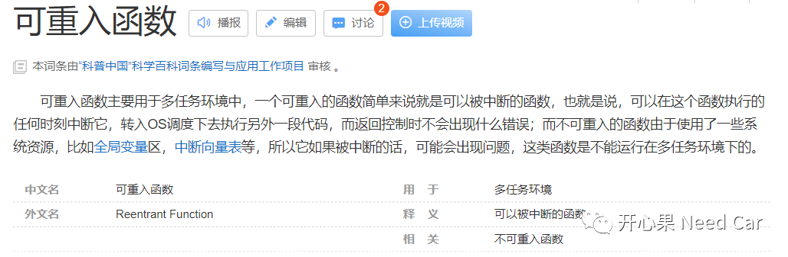
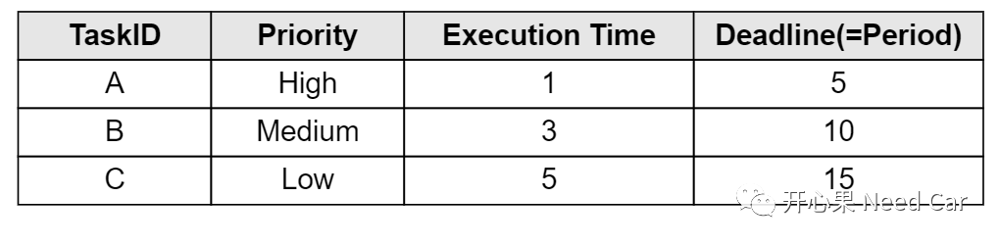
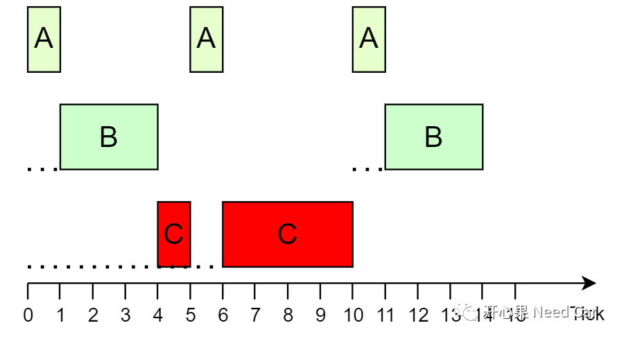
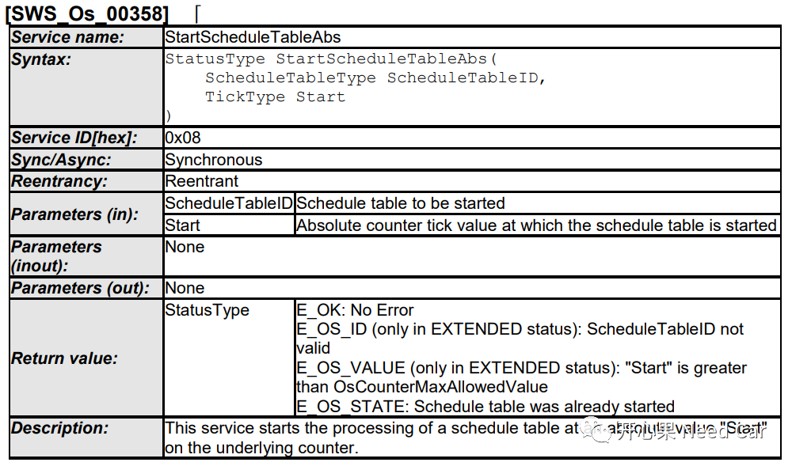
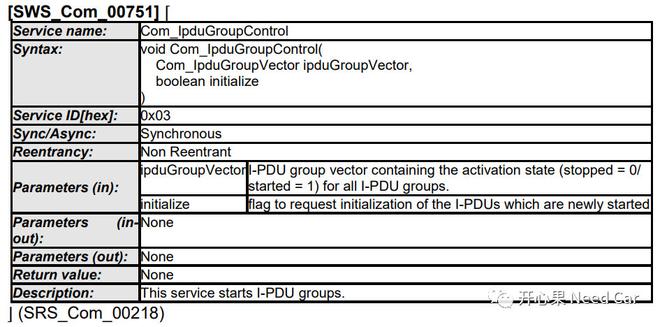

开心果 Need Car · 2022-05-11T11:38:00+08:00 · 微信原文
Autosar的每个模块都含有标准的API接口函数，这些函数可以分为可重入（Reentrant）/不可重入（Non-Reentrant）两种类型。如何去理解函数的Reentrant/Non-Reentrant呢？
我们先看一下百度词条对Reentrant/Non-Reentrant函数的定义：


Tick = 4 时刻，开始执行TaskC，在Tick = 4~5期间调用Function_Opt()，对Argu_A写操作，Argu_A = 5；
Tick = 5 时刻，由于TaskA优先级高于TaskC，TaskC任务被迫中止，OS调度，执行TaskA任务，TaskA在Tick = 5~6期间调用Function_Opt()，也对Argu_A写操作，Argu_A = 6。
Tick = 6 时刻，程序重新返回TaskC，此时，TaskC计算的Argu_A值被修改。对于TaskC来说，再使用Argu_A值进行后续逻辑的处理，将会带来非预期的结果。

Autosar中的Reentrant/Non-Reentrant函数示例
可重入函数示例所示：

不可重入函数示例如下所示：

...Com_TxIPduGroup_EnterExclusiveArea();for(idx = 0; idx < Com_GetSizeOfActivatableTxComIPdus(); idx++){Com_TxPduInfoIterType ComTxPduId = Com_GetTxPduInfoIdxOfActivatableTxComIPdus(idx);/* Evaluate requested active state of the I-PDU */boolean bRequestedActiveState = Com_IpduGroupControl_EvaluateActiveState(ipduGroupVector, ComTxPduId); /* SBSW_COM_PTR_API_VALID_PTR *//* COM615 For all I-PDUs that do not change their activation state, the function Com_IpduGroupControl shall do nothing. */Com_IpduGroupControl_SetRequestedActiveState(ComTxPduId, initialize, bRequestedActiveState);Com_TxIPduGroup_ThresholdCheck();}Com_TxIPduGroup_ExitExclusiveArea();...
上述ExclusiveArea区域（Line2~Line17）即临界区，此区间通过开/关中断方式对共享资源保护，避免程序执行过程中被打断，进而破坏共享资源数据的一致性。
如上述，使用不可重入函数似乎更安全，在任务抢占返回后，系统资源不受影响。那么，在实际的嵌入式开发中，不可重入函数有什么特点呢？
参考资料
AUTOSAR_SWS_COM.pdf
AUTOSAR_SWS_OS.pdf
https://baike.baidu.com/item/%E5%8F%AF%E9%87%8D%E5%85%A5%E5%87%BD%E6%95%B0
往期精彩回顾